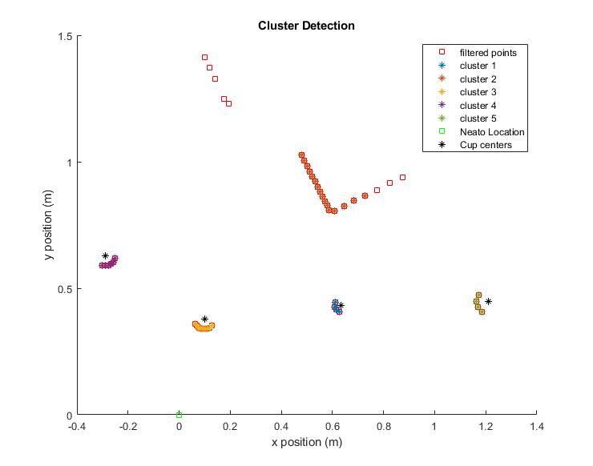
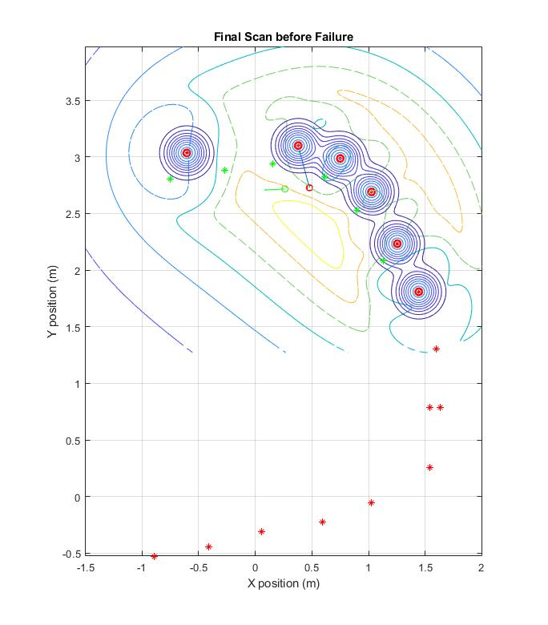

Background
This project was a culmination of various different analysis techniques learned in the class: “Quantitative Engineering Analysis”. I partner and I wrote a MATLAB script allows a robotic vacuum cleaner called a NEATO to perform SLAM, or Simultaneous Localization and Mapping. Using 2D LIDAR information and wheel encoder odometry, we attempted to navigate and map a closed loop course denoted by a series of plastic cups. Below is a gif demonstrating the robot, and some of the analysis it does in action!

How it works
This project utilized a bunch of really cool analysis techniques. The robot first took a scan of the environment, and then using a cluster detection and feature extraction algorithm that I wrote, we were able to determine the location of cup relative to the robot. The robot then used the encoder information to translate and rotate the points that it scanned into the global coordinate system. Then, using a Bayesian correspondence detector that I developed, we were able to determine which points corresponded to new cups, and which points corresponded to previously observed cups. Finally, using my implementation of the Iterative Closest Points algorithm, we were able to finely reconcile the information contained in the new scan, with the existing global map, and line up corresponding points as best as possible. More information can be found in our final report
Gallery
This project produced some pretty cool images and figures, which are shown off below
The first state of incoming LIDAR information. This is just raw, unfiltered 2D point clusters
The first stage of cluster detection is filtering out points that are simply too far away to get an accurate reading of. Points of potential interest are highlighted here in red
This figure shows actual cluster detection happening. Different clusters are identified based on variance in the distance between neighboring points.

This figure shows feature extraction once cluster detection is performed. Clusters that are circular and roughly the same size as cones are abstracted to their geometric centers, represented here by black asterisks.
This figure shows the relative likelihood of an old cup in any given location given the locations of currently known cups on the top. On the bottom, the figure shows the relative likelihood of a new cup in any given location given the locations of currently known cups. Super-imposed on each plot is a picture of the physical set up. The third cone was not picked up by the LIDAR sensor, but the algorithm is smart enough to know where there is likely a cup.

A look at a developed likelihood distribution gradient and global map of previously observed cups.